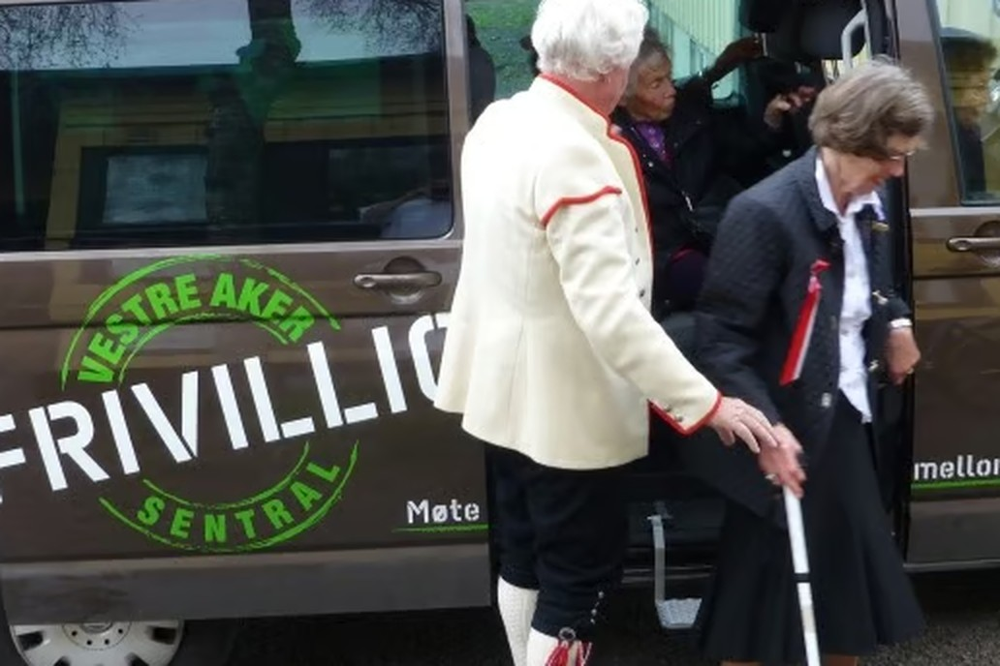

Frivilligbussen · Bydel Vestre Aker
Har du førerkort og noen timer til overs?
Frivilligbussen henter folk som ikke kommer seg fram på egen hånd, og kjører dem dit de skal. Siden 2012 har over 20 000 passasjerer vært med. Nå trenger vi flere sjåfører.
Vanlig førerkort klasse B er nok

Om oppdraget
Hva gjør en sjåfør på Frivilligbussen?
Du henter passasjerer der de bor og kjører dem til legen, butikken eller en aktivitet - og hjem igjen etterpå. Vi setter opp ruta på forhånd, så du vet hvem du skal hente og når.
Dette er samkjøring, ikke taxi. Det betyr at du ofte har flere med i bussen samtidig, og at turen tar litt lengre tid. Det er en del av opplegget: for mange passasjerer er praten i bussen like viktig som turen.
Du hjelper til med å komme inn og ut av bussen og med å bære det som skal bæres. Bussen er tydelig merket, har handsfree, og er enkel å kjøre.
Noen av passasjerene har ikke vært ute på flere uker. Turen er mer enn transport.
Det du får igjen
Hva sjåførene sier
- Du blir kjent med folk. De faste passasjerene blir raskt kjente ansikter, og mange ser fram til turen.
- Du kjører kjente veier. Alt foregår i Vestre Aker. Ingen lange turer, ingen ukjente adresser i andre bydeler.
- Du styrer din egen kalender. Vi setter opp turer etter når sjåførene kan. Kan du en formiddag i uka, passer det fint.
- Det koster deg ingenting. Bydelen dekker all drift. Du legger ikke ut for drivstoff eller noe annet.
Det praktiske
- Førerkort: Vanlig klasse B holder. Du trenger ikke bussførerkort.
- Hvor: Bydel Vestre Aker.
- Hvor ofte: Etter avtale. Vi setter opp turene etter når sjåførene er tilgjengelige.
- Opplæring: Du blir med en erfaren sjåfør de første turene og kjører ikke alene før du er trygg.
- Politiattest: Kreves ikke til dette oppdraget.
- Kostnader: Ingen. Bydel Vestre Aker dekker all drift av bussen.
Helt uforpliktende
Bli med på en tur først
Fyll ut skjemaet, så tar vi kontakt. Du får bli med en erfaren sjåfør på en tur og se hvordan det fungerer før du bestemmer deg.
Har du spørsmål? Ring 23 22 05 80 eller send e-post til espen@vestreaker.frivilligsentral.no.
Passer ikke dette?
Vi har flere oppdrag, og ikke alle krever at du kjører. Se hva du kan være med på.